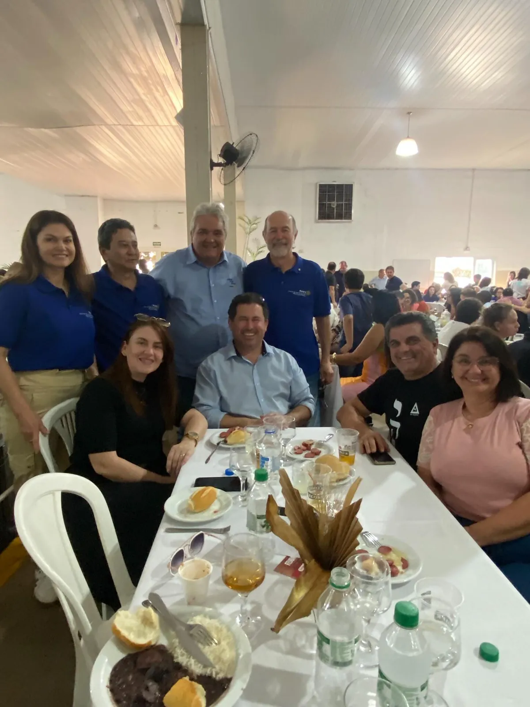

40 anos de Novo Cinquentenário
Numa festiva emocionante, o clube celebrou quatro décadas de companheirismo e trabalho voluntário, junto com o Dia das Mães.
Ler a históriaHá 40 anos, o Novo Cinquentenário reúne gente de Rio Preto que decidiu usar o seu tempo e o seu talento para servir. Banco de Leite, vacinação, cadeiras de rodas, leite para os asilos: cada projeto começa numa reunião de quarta-feira.
Rotary Club de São José do Rio Preto – Novo Cinquentenário
Festivas, ações e encontros que unem rotarianos, famílias e a comunidade de Rio Preto.
Numa festiva emocionante, o clube celebrou quatro décadas de companheirismo e trabalho voluntário, junto com o Dia das Mães.
Ler a história
A tradicional Festa Italiana do clube encantou com o tema Veneza, dança típica, Banda Cocktail e grandes parcerias.
Ler a história
Instituto Alarme, Rotary Novo Cinquentenário e AREC fizeram uma tarde de sabor, música e solidariedade.
Ler a históriaSaúde, infância, solidariedade e paz: causas que o clube abraça com trabalho voluntário e recursos levantados em eventos beneficentes.
O clube ajudou a implantar o Banco de Leite de Rio Preto em 2008 e contribuiu com R$ 155 mil para a nova sede, que leva o nome do companheiro Francisco Guedes Teixeira.
Ler a históriaNa luta do Rotary contra a pólio, o clube criou o Zé Gotinha Virtual, que tira dúvidas das famílias sobre vacinação pelo WhatsApp.
Ler a históriaCadeiras de rodas doadas ao Hospital-Lar Nossa Senhora das Graças e a quem precisa, muitas vezes pelas mãos dos próprios companheiros.
Ler a históriaO clube se reúne toda quarta-feira à noite na sede, a Casa do Rotary na Redentora. Uma vez por mês, a reunião vira festiva, com convidados, aniversariantes e homenagens.
Os companheiros planejam os projetos, recebem palestrantes e convidados e decidem os próximos passos do clube. Depois, jantar e companheirismo.
Casa do Rotary · Rua Dr. Raul Silva, 2160
Noite especial com famílias e convidados: aniversariantes do mês, datas comemorativas, posse de novos associados e visitas de outros clubes.
Casa do Rotary · Rua Dr. Raul Silva, 2160
Com rotarianos de Kentville, no Canadá, o clube implantou a cozinha industrial do Hospital-Lar Nossa Senhora das Graças, em 2012, e a Unidade Móvel de Diagnóstico de Doenças do Fígado, com o Hospital de Base, em 2019.
É a força do Rotary: um clube de bairro conectado a 46 mil clubes no mundo. Quando um projeto precisa de ajuda, tem companheiro do outro lado do planeta pronto para somar.
Leia essa históriaO Rotary reúne pessoas de diferentes profissões que decidiram usar o que sabem, e o tempo que têm, para melhorar a vida da comunidade. Em Rio Preto e no mundo.
Ações, festivas, visitas e encontros, com fotos do nosso Instagram.

Para fechar o Outubro Rosa, o clube levou turbantes às mulheres em tratamento na Santa Casa de Rio Preto.
Ler a história
O presidente Carlos Passarini visitou o Rotary Club de Glen Ellen, nos Estados Unidos, e abriu conversa sobre projetos e intercâmbio.
Ler a história
Graças à doação de um casal de companheiros, um adolescente ganhou mais mobilidade, conforto e qualidade de vida.
Ler a históriaVenha conhecer uma reunião do clube como convidado. Sem compromisso: a gente conta como funciona e você sente se é para você.